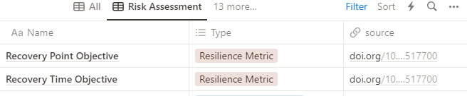
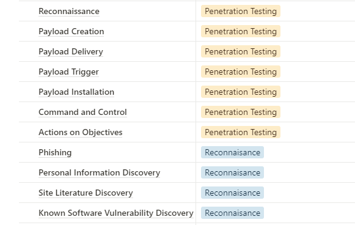
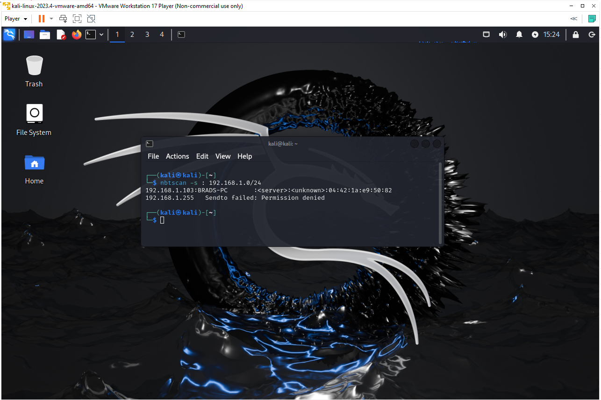
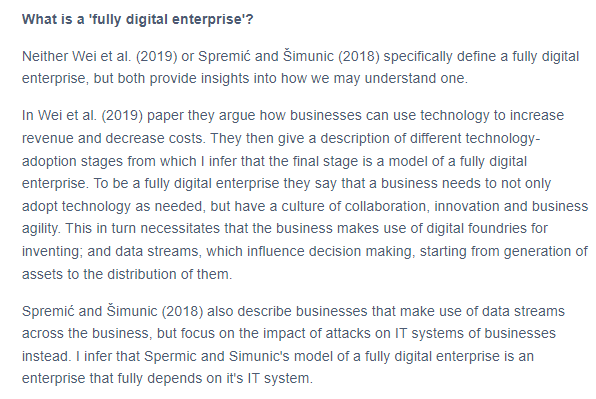
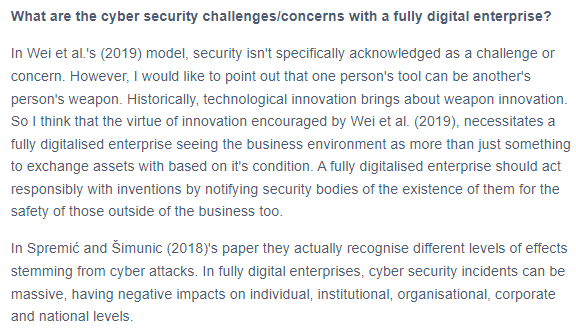
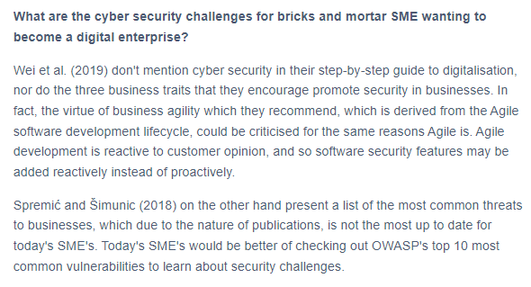
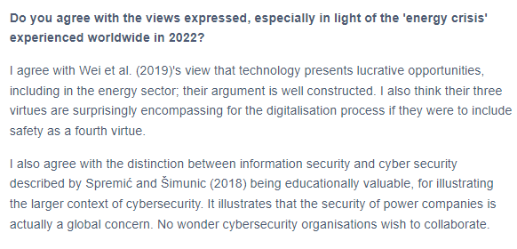
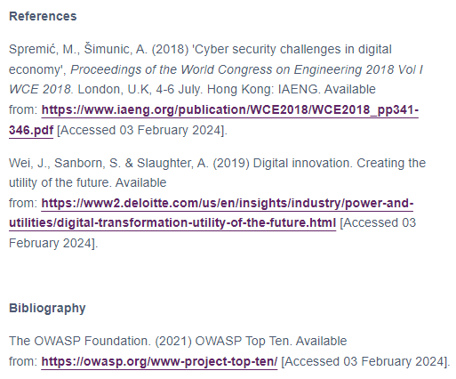

Week 1
The History of Network Security and Vulnerabilities
This week I focused on reviewing the history of network security and vulnerabilities and relating it to the modern landscape. We started from the domain of information security and explored the transformation of concerns into what we know today as modern cyber security. One paper that did this particularly well was Spremić and Šimunic's 2018 paper titled 'Cyber security challenges in digital economy'. In this paper they described different categories of impact that attacks on information systems can have, and therefore the reason to seperate the notion of information security from cyber security as we know it today. I found this argument compelling as it's the impact of attacks that actually motivates a direction towards security for people like myself. From the historical model, network security can be seen as focusing on the technologies that allow enterprises to operate on such a large scale. One thing network security doesn't consider, that Spremić and Šimunic's paper talks about and should not be forgotten, is how personalised an attack can be too. Nevertheless, I found this historical exploration useful for philosophically framing the domain.
Key models that were introduced include Lockheed Martin's Cyber Kill Chain. It's essentially a goal-based cyber security attack plan and I would use this, along with other models and information, to theorycraft potential vulnerabiltiies during a vulnerability assessment. To track concepts and models that are important to network security, I store them in a personal knowledge-base for future retrospection:
 Network Security Assessment: Know Your Network
This week also kickstarted with some core reading from the O'Reily book: 'Network Security Assessment: Know Your Network' by Chris McNab. It provides a somewhat hands-on approach to network security assessment, so this week I set up a virtual machine running the Kali Linux operating system. This operating system is specifically geared towards digital forensics and pentetration testing, and so suitable for this module. Using the virtual machine I performed some local network discovery using commands found in the book, as well as commands found outside of it, to recap and familiarise myself with them for this course. I wish I had found time to play around with scapy too. It's a python library for network tasks, particularly involving the low-level manipulation of network packets, and a great way to explore network protocols in detail. Now that I have my virtual machine set up, I expect to build expertise using it through the remainder of this course. Below is a screenshot I took from some exploration I did using Kali on the virtual machine. I was able to locate my own personal PC on my local network via ARP scanning for IP addresses on the network, and then performing a NETBIOS nameserver scan.
Digitalisation - What are the Security Implications?
The final task of this week was to answer four specific questions referencing Wei et al.'s (2019) article 'Digital innovation. Creating the utility of the future' and Spremić and Šimunic's (2018) paper titled 'Cyber security challenges in digital economy'. These were my answers below:
    